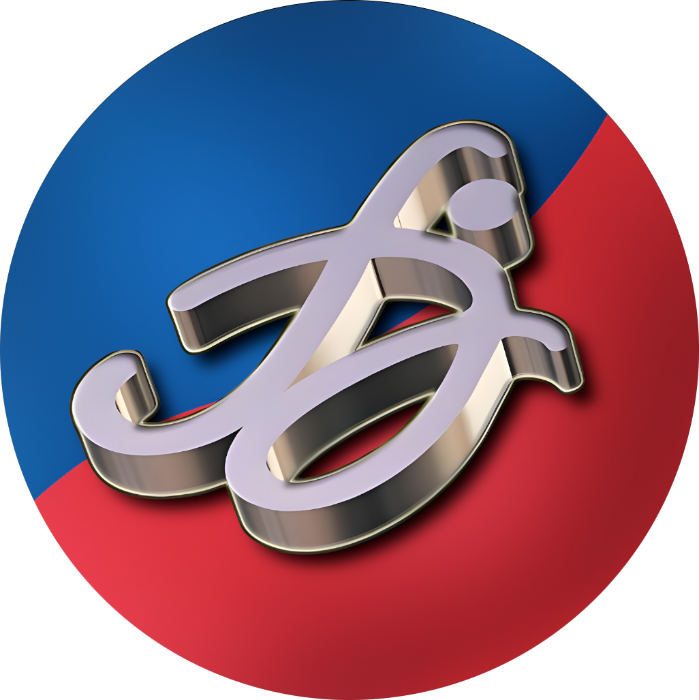

Pompa FL
Video Referensi
Diakses
--:--:--
Browser kamu tidak mendukung tag video.
Pilih salah satu jenis rotor di bawah untuk mulai
Pilih jenis rotor
Timestamp diambil otomatis dari waktu HP/komputer kamu saat halaman dibuka. Video akan lompat ke bagian sesuai pompa yang dipilih lalu langsung diputar.